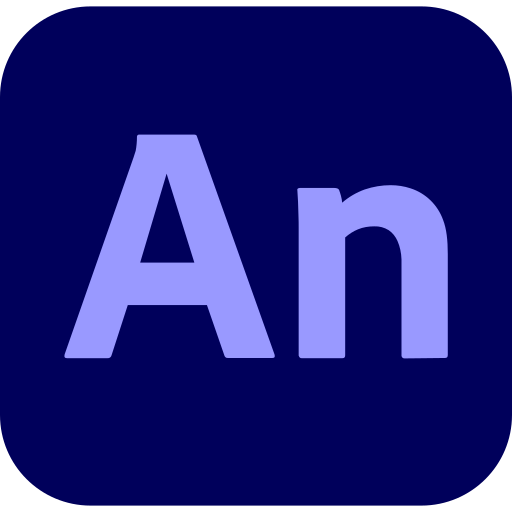
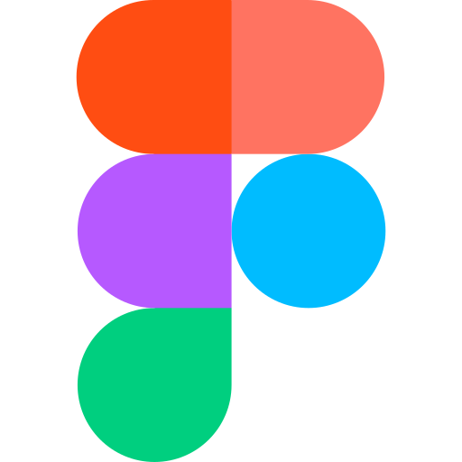

Estudiante de Ingeniería Multimedia (UNAD) con etapa lectiva culminada del Tecnólogo en Desarrollo Multimedia y Web (SENA), apasionado por la creación de experiencias digitales, diseño UX/UI y desarrollo Front-End.
Contactar por WhatsAppSitio web comercial de práctica ("Fresquesito") maquetado con HTML5 y CSS3, articulado con su propuesta de identidad visual.
Ver sitio webPropuesta de identidad para "Fresquesito": definición visual, logotipo y aplicaciones en mockups.
Ver manual (PDF)Estructura inicial de pantallas y flujo de navegación prototipado en Figma para el proyecto "Fresquesito".
Ver prototipo en FigmaAnimación 2D y Stop Motion.
Ejercicio de animación cuadro a cuadro con montaje y edición audiovisual.
Práctica de ciclo de movimiento y composición en entorno multimedia.


Disponible para etapa productiva, prácticas o primeras oportunidades en desarrollo web inicial, multimedia o soporte técnico.
Email: jaga0182@gmail.com
Teléfonos / WhatsApp: 315 726 0535 / 312 547 2446
GitHub: github.com/jonny-182